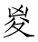

茅坤：“伊尹与成汤同起伐（商），《夏本纪》所载汤至太戊且七世矣，而尹之子陟乃为相，岂得年寿悬绝若此！可见史迁所述帝系世本，未有不足凭者。”
本篇记述了商朝的历史，多取材于《尚书》《诗经》。商朝前期曾多次迁都，直到盘庚迁殷才安定下来。周人习惯称商朝为“殷”，汉朝承袭了这一称呼。相传成汤灭夏是历史上第一次改朝换代，与后来的武王伐纣并称“革命”，都具有划时代的意义，备受儒家推崇。
殷契，母曰简狄，有娀氏之女，为帝喾次妃。三人行浴，见玄鸟堕其卵，简狄取吞之，因孕生契。契长而佐禹治水有功。帝舜乃命契曰：“百姓不亲，五品【五品：指父义、母慈、兄友、弟恭、子孝五种伦理教化。】不训，汝为司徒而敬敷五教，五教在宽。”封于商，赐姓子氏。契兴于唐、虞、大禹之际，功业着于百姓，百姓以平。
契卒，子昭明立。昭明卒，子相土立。相土卒，子昌若立。昌若卒，子曹圉立。曹圉卒，子冥立。冥卒，子振立。振卒，子微立。微卒，子报丁立。报丁卒，子报乙立。报乙卒，子报丙立。报丙卒，子主壬立。主壬卒，子主癸立。主癸卒，子天乙立，是为成汤。
殷契的母亲名叫简狄，她是有娀氏的女子，是帝喾的次妃。包括她在内的三个女子外出洗澡，看见一只玄鸟生蛋落下来，简狄就捡起来吃了，因而怀孕生下契。契长大以后辅佐禹治水有功。帝舜于是任命契说：“百姓不相亲睦，教化不能和顺，你担任司徒，要恭谨地推行五种伦理教化，要以宽厚为根本。”舜把商地封给他，赐姓子氏。契兴起于唐尧、虞舜、大禹的时代，在百姓心中功勋卓著，百姓因此生活安定。
契死后，他的儿子昭明继位。昭明死后，他的儿子相土继位。相土死后，他的儿子昌若继位。昌若死后，他的儿子曹圉继位。曹圉死后，他的儿子冥继位。冥死后，他的儿子振继位。振死后，他的儿子微继位。微死后，他的儿子报丁继位。报丁死后，他的儿子报乙继位。报乙死后，他的儿子报丙继位。报丙死后，他的儿子主壬继位。主壬死后，他的儿子主癸继位。主癸死后，他的儿子太乙继位，这就是成汤。
成汤，自契至汤八迁。汤始居亳，从先王居，作《帝诰》。
汤征诸侯。葛伯不祀，汤始伐之。汤曰：“予有言：人视水见形，视民知治不【不：同“否”。】。”
伊尹曰：“明哉！言能听，道乃进。君国子民，为善者皆在王官。勉哉，勉哉！”汤曰：“汝不能敬命，予大罚殛之，无有攸【攸：同“所”。】赦。”作《汤征》。
伊尹名阿衡。阿衡欲奸【奸：通“干”，求见。】汤而无由，乃为有莘氏媵臣，负鼎俎，以滋味说汤，致于王道。或曰，伊尹处士【处士：隐居不仕的贤人。】，汤使人聘迎之，五反然后肯往从汤，言素王【素王：有帝王之德而无帝王之位的人。】及九主【九主：指三皇、五帝、夏禹。】之事。汤举任以国政。伊尹去汤适夏。既丑有夏，复归于亳。入自北门，遇女鸠、女房，作《女鸠》《女房》。
汤出，见野张网四面，祝曰：“自天下四方皆入吾网。”汤曰：“嘻，尽之矣！”乃去其三面，祝曰：“欲左，左。欲右，右。不用命，乃入吾网。”诸侯闻之，曰：“汤德至矣，及禽兽。”
成汤，从契到汤一共迁都八次。到汤在位时才定都于亳，这是先王居住过的地方，汤作《帝诰》。
汤征伐诸侯。葛伯不按时祭祀，汤开始征讨他。汤说：“我说过这样的话：人在水中能看到自己的形象，观察百姓就能知道自己的治理是否得当。”
伊尹说：“圣明啊！能听取别人的意见，道德才会进步。治理国家，管理人民，做好事的人就都在帝王身边做官。努力吧，努力吧！”汤说：“如果你们不听从我的命令，我就要严厉地惩罚你们，不会宽赦。”汤作《汤征》。
伊尹的官名是阿衡。阿衡想要求见汤却找不到门路，于是成为有莘氏女子陪嫁的奴隶，背着厨具，凭借谈论烹调的道理来说服汤，最终成就王道。有人说，伊尹是一位隐士，汤派人聘请迎接他，往返五次他才肯前往跟随汤，讲述素王和九主的事情。汤任用他来管理国政。伊尹离开汤去夏都。他看到夏朝的丑恶，于是又回到亳。他从北门进入城中，遇到汤的大臣女鸠、女房，于是作《女鸠》《女房》。
汤外出，看见野外有猎人在四个方向设网打猎，并且祷告说：“愿天下四方来的猎物都进入我的网中。”汤说：“唉，那样就把鸟兽都捕尽了！”于是撤去三个方向的网，并且祷告说：“想要去左边的，向左走。想要去右边的，向右走。不听从命令的，才会进入我的网中。”诸侯听说以后，都说：“汤的德行已经达到最高境界了，连鸟兽也能享受他的恩惠。”
当是时，夏桀为虐政淫荒，而诸侯昆吾氏为乱。汤乃兴师率诸侯，伊尹从汤，汤自把钺以伐昆吾，遂伐桀。汤曰：“格女众庶，来，女悉听朕言。匪【匪：同“非”。】台小子【台小子：帝王的自谦之辞。】敢行举乱，有夏多罪，予维闻女众言，夏氏有罪。予畏上帝，不敢不正【正：通“征”。】。今夏多罪，天命殛之。今女有众，女曰：‘我君不恤我众，舍我啬事【啬事：农事。啬，通“穑”，收割谷物。】而割政【割政：暴政。割，通“害”。】。’女其曰：‘有罪，其奈何？’夏王率止众力，率夺夏国。有众率怠不和，曰：‘是日何时丧？予与女皆亡！’夏德若兹，今朕必往。尔尚【尚：通“倘”，如果。】及予一人【予一人：帝王的自称。】致天之罚，予其大理女。女毋不信，朕不食言。女不从誓言，予则帑僇【帑僇：刑罚连及子女。也作“孥戮”。】女，无有攸赦。”以告令师，作《汤誓》。于是汤曰“吾甚武”，号曰武王。
在这个时候，夏桀施行暴政而荒淫无道，同时诸侯昆吾氏趁机作乱。于是汤发兵率领诸侯前去讨伐，伊尹跟随汤，汤亲自手持斧钺来攻打昆吾氏，接着又去攻打夏桀。汤说：“你们这些人，来，都听我说。不是我胆敢起来叛乱，夏朝的罪恶深重，我听你们也说，夏朝有罪。我畏惧天帝，不敢不去征伐。现在夏桀的罪恶深重，这是上天要诛杀他。现在你们这些人，都说：‘我们的君王不体恤我们众人，废弃农事而推行暴政。’你们说：‘夏朝有罪，又能怎么样呢？’夏王竭尽民力为他一人服务，掠夺整个夏国的财富。有些民众都懈怠而不愿服从，说：‘这个太阳什么时候才会灭亡？我们宁愿和你同归于尽！’夏朝的命数已经衰败到这个地步了，现在我必须前往征伐。你们跟随我执行上天的惩罚，我就会重赏你们。你们不要不相信，我不会说话不守信用。如果你们不服从誓言，我就诛杀你们和你们子女，绝不宽赦。”汤用这些话号令全军，作《汤誓》。于是汤说“我十分勇武”，号称武王。
桀败于有娀之虚【虚：同“墟”，旧址。】，桀奔于鸣条，夏师败绩。汤遂伐三，俘厥宝玉，义伯、仲伯作《典宝》【《典宝》：《尚书》佚篇。《五帝本纪》《夏本纪》《殷本纪》《周本纪》大量引用《尚书》文字，而《典宝》《夏社》《明居》等篇目不见于今本《尚书》，《汤诰》篇目虽见于伪古文《尚书》，文字却大不相同。可见《史记》在保存古代文献方面的重要贡献。】。汤既胜夏，欲迁其社，不可，作《夏社》。伊尹报。于是诸侯毕服，汤乃践天子位，平定海内。
汤归至于泰卷陶，仲虺作诰。既绌【绌：通“黜”，废止，废弃。】夏命，还亳，作《汤诰》：“维三月，王自至于东郊。告诸侯群后：‘毋不有功于民，勤力乃事。予乃大罚殛女，毋予怨。’曰：‘古禹、皋陶久劳于外，其有功乎民，民乃有安。东为江，北为济，西为河，南为淮，四渎已修，万民乃有居。后稷降播，农殖百谷。三公咸有功于民，故后有立。昔蚩尤与其大夫作乱百姓，帝乃弗予，有状。先王言不可不勉。’曰：‘不道，毋之在国，女毋我怨。’”以令诸侯。伊尹作《咸有一德》，咎单作《明居》。
汤乃改正朔【正朔：指历法。】，易服色，上【上：同“尚”，崇尚。】白，朝会以昼。
郝敬：“孔甲好鬼而淫乱，无足称者。”
桀在有娀氏的故地被打败，逃到鸣条，夏军战败。汤于是攻打三国，获得了那里的宝玉，义伯、仲伯因此作《典宝》。汤战胜夏桀以后，就想要迁移社神，没能成功，于是作《夏社》。伊尹向汤报告。这时诸侯都归顺了汤，汤于是登上天子之位，平定四海之内。
汤在返回的途中来到泰卷陶，大臣仲虺作了一篇诰。汤已经推翻了夏朝，回到亳，作《汤诰》：“在三月，王亲自来到东郊。他告诫天下诸侯说：‘不要在对民众毫无功绩，努力做好你们的事情。否则我就要严厉地惩罚你们，你们不要怨恨我。’他又说：‘古时候的禹、皋陶长年在外面操劳，他们对民众有功绩，民众才得以安定。他们在东方治理长江，在北方治理济水，在西方治理黄河，在南方治理淮水，这四条大河治理好以后，天下百姓才有了居住的地方。后稷教导人民耕种，人们才知道种植各种庄稼。他们三位都对民众有功绩，所以他们的后代才能创建国家。从前蚩尤和他的大臣为害百姓，天帝不保佑他，这些都是真实的事情。先代圣王的话不可以不用来勉励自己。’他又说：‘为政无道，就不让他治理国家，你们也不要怨恨我。’”他以此命令诸侯。伊尹作《咸有一德》，咎单作《明居》。
汤于是变更历法，改易服饰的颜色，崇尚白色，群臣在白天朝见天子。
汤崩，太子太丁未立而卒，于是乃立太丁之弟外丙，是为帝外丙。帝外丙即位三年，崩，立外丙之弟中壬，是为帝中壬。帝中壬即位四年，崩，伊尹乃立太丁之子太甲。太甲，成汤敌【敌：通“嫡”。】长孙也，是为帝太甲。帝太甲元年，伊尹作《伊训》，作《肆命》，作《徂后》。
帝太甲既立三年，不明，暴虐，不遵汤法，乱德，于是伊尹放之于桐宫。三年，伊尹摄行政当国，以朝诸侯。
帝太甲居桐宫三年，悔过自责，反【反：同“返”，归向。】善，于是伊尹乃迎帝太甲而授之政【伊尹乃迎帝太甲而授之政：这种说法出自《尚书》《孟子》等儒家典籍，而《竹书纪年》则记载“仲壬崩，伊尹放太甲于桐，乃自立也”，七年后，太甲逃出流放地，杀死伊尹，夺回帝位，把伊尹的封地平分为他的两个儿子伊陟、伊奋。】。帝太甲修德，诸侯咸归殷【殷：盘庚迁都于殷以前，国号不应称殷。“殷”为周人对商朝的称呼，司马迁作《殷本纪》将各时期的商朝统称为“殷”。】，百姓以宁。伊尹嘉之，乃作《太甲训》三篇，褒帝太甲，称太宗。
汤去世以后，太子太丁还没有继位就死去了，于是就立太丁的弟弟外丙为帝，这就是帝外丙。帝外丙在位三年，去世以后，立外丙的弟弟中壬为帝，这就是帝中壬。帝中壬在位四年，去世以后，伊尹于是立太丁的儿子太甲为帝。太甲是成汤的嫡长孙，他就是帝太甲。帝太甲元年，伊尹作《伊训》，作《肆命》，作《徂后》。
帝太甲在位三年，政治不清明，为人很残暴，不遵守汤制定的法度，道德败坏，于是伊尹将他流放到桐宫。在太甲流放的三年中，伊尹代行天子职权处理国政，接受诸侯的朝见。
帝太甲在桐宫居住三年，忏悔过错，并责备自己，开始归于善道，于是伊尹把帝太甲迎接回来，并将国政交还给他。帝太甲修整德行，诸侯都来归顺殷商，百姓因此安宁。伊尹赞赏他的做法，于是作《太甲训》三篇，用来褒扬帝太甲，尊他为太宗。
太宗崩，子沃丁立。帝沃丁之时，伊尹卒。既葬伊尹于亳，咎单遂训伊尹事，作《沃丁》。
沃丁崩，弟太庚立，是为帝太庚。帝太庚崩，子帝小甲立。帝小甲崩，弟雍己立，是为帝雍己。殷道衰，诸侯或不至。
帝雍己崩，弟太戊立，是为帝太戊。帝太戊立伊陟为相。亳有祥桑榖共生于朝，一暮大拱。帝太戊惧，问伊陟。伊陟曰：“臣闻妖不胜德，帝之政其有阙【阙：同“缺”，缺点、过失。】与？帝其修德。”太戊从之，而祥桑枯死而去。伊陟赞言于巫咸。巫咸治王家有成，作《咸艾》，作《太戊》。帝太戊赞伊陟于庙，言弗臣，伊陟让，作《原命》。殷复兴，诸侯归之，故称中宗。
成汤，选自清代《钦定书经图说》。
中宗崩，子帝中丁立。帝中丁迁于隞。河亶甲居相。祖乙迁于邢。帝中丁崩，弟外壬立，是为帝外壬。仲丁【仲丁：即前文中的“中丁”。仲，甲骨文、金文作“中”。】《书》阙不具。帝外壬崩，弟河亶甲立，是为帝河亶甲。河亶甲时，殷复衰。
河亶甲崩，子帝祖乙立。帝祖乙立，殷复兴。巫贤任职。
太宗去世以后，他的儿子沃丁继位。帝沃丁在位的时候，伊尹去世。伊尹被安葬在亳以后，咎单于是想用伊尹的事迹训诫后人，作《沃丁》。
沃丁去世以后，他的弟弟太庚继位，他就是帝太庚。帝太庚去世以后，他的儿子帝小甲继位。帝小甲去世以后，他的弟弟雍己继位，他就是帝雍己。这时殷商国势衰败，有的诸侯不来朝见了。
帝雍己去世以后，他的弟弟太戊继位，这就是帝太戊。帝太戊任命伊陟为相。亳都的朝堂有桑树和榖树生长在一起的怪异现象，一个晚上就长成双手合抱的围度。帝太戊很害怕，就询问伊陟。伊陟说：“我听说怪异的事物无法战胜美好的德行，难道是您的政令还有什么缺点吗？您应该努力修整德行。”太戊听从了他的建议，因而那棵怪桑树就枯死消失了。伊陟对巫咸赞美并讲述了这件事。巫咸治理王室也非常有成绩，于是作《咸艾》，作《太戊》。帝太戊在宗庙称赞伊陟，言辞中不把他视为臣子，伊陟辞让，作《原命》。殷商重新振兴起来，诸侯都来归顺，因此太戊被尊称为中宗。
中宗去世以后，他的儿子帝中丁继位。帝中丁将都城迁到隞。河亶甲又迁都到相。祖丁迁都到邢。帝中丁去世以后，他的弟弟外壬继位，这就是帝外壬。仲丁的记载在《尚书》中残缺不全。帝外壬去世以后，他的弟弟河亶甲继位，这就是帝河亶甲。河亶甲在位期间，殷商再次衰败。
河亶甲去世以后，他的儿子帝祖乙继位。帝祖乙在位时，殷商又兴盛起来，巫贤当权。
祖乙崩，子帝祖辛立。帝祖辛崩，弟沃甲立，是为帝沃甲。帝沃甲崩，立沃甲兄祖辛之子祖丁，是为帝祖丁。帝祖丁崩，立弟沃甲之子南庚，是为帝南庚。帝南庚崩，立帝祖丁之子阳甲，是为帝阳甲。帝阳甲之时，殷衰。
自中丁以来，废适【适：通“嫡”。】而更立诸弟子，弟子或争相代立，比九世乱，于是诸侯莫朝。
帝阳甲崩，弟盘庚立，是为帝盘庚。帝盘庚之时，殷已都河北，盘庚渡河南，复居成汤之故居，乃五迁，无定处。殷民咨【咨：嗟叹。】胥【胥：全部，与“皆”意思相同。】皆怨，不欲徙。盘庚乃告谕诸侯大臣曰：“昔高后成汤与尔之先祖俱定天下，法则可修。舍而弗勉，何以成德！”乃遂涉河南，治亳【亳：《尚书》作亳殷，即今河南安阳殷墟，现在位于黄河以北，而成汤定都之亳（今河南省商丘市）在黄河以南。从武乙时“殷复去亳，徙河北”的记载来看，司马迁将盘庚之亳误认为成汤之亳了。】，行汤之政，然后百姓由宁，殷道复兴。诸侯来朝，以其遵成汤之德也。
祖乙去世以后，他的儿子帝祖辛继位。帝祖辛去世以后，他的弟弟沃甲继位，这就是帝沃甲。帝沃甲去世以后，立沃甲的哥哥祖辛的儿子祖丁为帝，这就是帝祖丁。帝祖丁去世以后，立沃甲的儿子南庚为帝，这就是帝南庚。帝南庚去世以后，立帝祖丁的儿子阳甲为帝，这就是帝阳甲。帝阳甲在位期间，殷商又衰落了。
自中丁以来，经常废黜嫡子而改立兄弟及其儿子，有的时候兄弟及其儿子相互争夺帝位，连续九世都非常混乱，于是诸侯都不来朝见。
帝阳甲去世以后，他的弟弟盘庚继位，这就是帝盘庚。帝盘庚在位的时候，殷商已经定都黄河以北，盘庚渡过黄河到南岸，重新在成汤的故居定都，至此一共迁都五次，没有固定的地方。殷商民众都叹息怨恨，不想再迁徙。盘庚于是告谕诸侯和大臣说：“从前伟大的先帝成汤和你们的先祖一起安定天下，他的法则应该遵守。舍弃他的法则而不去努力，怎么能够成就功德呢！”于是他渡过黄河来到南岸，修治亳，实行成汤时的政令，此后百姓得以安宁，殷商的国势重新振兴。诸侯都来朝见，因为盘庚遵守成汤时的德政。
帝盘庚崩，弟小辛立，是为帝小辛。帝小辛立，殷复衰。百姓思盘庚，乃作《盘庚》三篇。帝小辛崩，弟小乙立，是为帝小乙。
帝小乙崩，子帝武丁立。帝武丁即位，思复兴殷，而未得其佐。三年不言，政事决定于冢宰，以观国风。武丁夜梦得圣人，名曰说。以梦所见视群臣百吏，皆非也。于是乃使百工营求之野，得说于傅险中。是时说为胥靡【胥靡：服劳役的奴隶或刑徒。】，筑于傅险。见于武丁，武丁曰是也。得而与之语，果圣人，举以为相，殷国大治。故遂以傅险姓之，号曰傅说。
帝武丁祭成汤，明日，有飞雉登鼎耳而呴【呴：同“雊”，野鸡鸣叫。】，武丁惧。祖己曰：“王勿忧，先修政事。”祖己乃训王曰：“唯天监下典厥义，降年有永有不永，非天夭民，中绝其命。民有不若德，不听罪，天既附命正厥德，乃曰其奈何。呜呼！王嗣敬民，罔非天继，常祀毋礼于弃道。”武丁修政行德，天下咸欢，殷道复兴。
帝盘庚去世以后，他的弟弟小辛继位，这就是帝小辛。帝小辛在位时，殷商又衰落了。百姓都思念盘庚，于是作《盘庚》三篇。帝小辛去世以后，他的弟弟小乙继位，这就是帝小乙。
帝小乙去世以后，他的儿子帝武丁继位。帝武丁在位时，想要重新振兴殷商，却没有找到合适的助手。他三年没有发布政令，政事都由冢宰决断，他借此机会观察国内的情况。武丁在一天夜里梦见一位圣人，名叫说。他根据梦中看到的样子观察群臣百官，都不是那个人。于是他派百官到民间去寻找，终于在傅险找到了说。当时说是个服劳役的奴隶，在傅险筑城。说被带去见武丁，武丁说就是这个人。武丁和说谈论，发现他果然是个圣人，就任用他为相，殷商于是太平安定。于是就以傅险为他的姓氏，称为傅说。
杨慎：“武丁在民间，已知说之贤矣。一旦欲举而加之臣民之上，人未必帖然以听也，故征之于梦焉。盖商俗质而信鬼，因民之所信而导之，是圣人所以成务之几也。”
帝武丁祭祀成汤，第二天，有雉鸡飞来站在鼎耳上鸣叫，武丁非常害怕。祖己说：“大王不要担忧，还是先修整好政务。”祖己于是就对王训诫说：“上天考察天下民众主要看他们的行为是否符合道义，上天赐予的寿命有的长有的不长，并不是上天想要让某些人短命，而是他们自己中途断绝了自己的命数。有的人不遵守道德，不服从判罚，上天已经赐予命数来纠正他们的德行，这个时候才说怎么办。唉！大王继承王位，恭敬对待民众，他们无不是上天的子孙，要经常祭祀，不要失礼而废弃天道。”武丁修整政事，施行仁德，天下人都很欢欣，殷商的国势再次兴盛起来。
帝武丁崩，子帝祖庚立。祖己嘉武丁之以祥雉为德，立其庙为高宗，遂作《高宗肜日》及《训》。
帝祖庚崩，弟祖甲立，是为帝甲。帝甲淫乱，殷复衰。
帝甲崩，子帝廪辛立。帝廪辛崩，弟庚丁立，是为帝庚丁。帝庚丁崩，子帝武乙立。殷复去亳，徙河北。
帝武乙无道，为偶人，谓之天神。与之博，令人为行。天神不胜，乃僇辱之。为革囊，盛血，卬【卬：同“仰”。】而射之，命曰“射天”。武乙猎于河渭之间，暴雷，武乙震死。子帝太丁立。帝太丁崩，子帝乙立。帝乙立，殷益衰。
帝乙长子曰微子启，启母贱，不得嗣。少子辛，辛母正后，辛为嗣。帝乙崩，子辛立，是为帝辛，天下谓之纣。
帝武丁去世以后，他的儿子帝祖庚继位。祖己赞赏武丁因雉鸡飞来的怪异现象而推行德政，为他创建宗庙，称其为高宗，于是作《高宗肜日》和《高宗之训》。
帝祖庚去世以后，他的弟弟祖甲继位，这就是帝甲。帝甲荒淫悖乱，殷商再次衰落。
帝甲去世以后，他的儿子帝廪辛继位。帝廪辛去世以后，他的弟弟庚丁继位，这就是帝庚丁。帝庚丁去世以后，他的儿子帝武乙继位。殷商又离开亳，迁徙到黄河以北。
帝武乙统治无道，制作木偶人，称其为天神。他和这个木偶人赌博，让别人代替他玩。天神不能赢，就侮辱它。他又制作皮囊，在里面盛满血，仰头朝它射箭，称为“射天”。武乙在黄河与渭水之间狩猎，天上突然打雷，将武乙震死了。他的儿子帝太丁继位。帝太丁去世以后，他的儿子帝乙继位。帝乙在位时，殷商的国势更加衰落了。
帝乙的长子叫微子启，启的母亲地位低贱，因此他没有资格继承王位。帝乙的小儿子叫辛，辛的母亲是正后，因此辛得以继承王位。帝乙去世以后，他的儿子辛继位，这就是帝辛，天下人称他为纣。
帝纣资辨【辨：同“辩”，有口才。】捷疾，闻见甚敏；材力过人，手格勐兽；知足以距【距：同“拒”，拒绝。】谏，言足以饰非；矜人臣以能，高天下以声，以为皆出己之下。好酒淫乐，嬖于妇人。爱妲己，妲己之言是从。于是使师涓作新淫声，北里之舞，靡靡之乐。厚赋税以实鹿台之钱，而盈钜桥之粟。益收狗马奇物，充仞【仞：满。】宫室。益广沙丘苑台，多取野兽蜚鸟【蜚鸟：即飞鸟，“蜚”同“飞”。】置其中。慢于鬼神。大冣乐戏于沙丘，以酒为池，悬肉为林，使男女倮【倮：同“裸”。】相逐其间，为长夜之饮。
百姓怨望而诸侯有畔者，于是纣乃重刑辟，有炮格之法。以西伯昌、九侯、鄂侯为三公。九侯有好女，入之纣。九侯女不憙【憙：同“喜”。】淫，纣怒，杀之，而醢【醢：将人剁成肉酱的酷刑。】九侯。鄂侯争之强，辨之疾，并脯鄂侯。西伯昌闻之，窃叹。崇侯虎知之，以告纣，纣囚西伯羑里。西伯之臣闳夭之徒，求美女、奇物、善马以献纣，纣乃赦西伯。西伯出而献洛西之地，以请除炮格之刑。纣乃许之，赐弓矢斧钺，使得征伐，为西伯。而用费中为政。费中善谀，好利，殷人弗亲。纣又用恶来。恶来善毁谗，诸侯以此益疏。
帝纣能言善辩，思维敏捷，耳聪目明；他的身高力大，超过常人，可以徒手和勐兽搏斗；他的智慧足以拒绝臣下的劝谏，口才足以粉饰自己的错误；他用才能向大臣夸耀，用声威压制天下，认为所有人都不如自己。他喜欢喝酒，骄奢淫逸，宠爱女人。他尤其宠爱妲己，妲己说的话他都听从。于是他让乐师涓创作放荡的乐曲，北里的舞蹈，淫靡的音乐。他增加赋税来充实聚集在鹿台的钱财，又在钜桥的粮仓装满了粮食。他广泛地搜寻狗马和奇珍异宝，使其充盈宫室。他还扩建沙丘的苑囿和亭台，捕捉很多野兽飞禽投放在里面。他对鬼神的祭祀很怠慢。他在沙丘聚集很多歌舞艺人，蓄酒为池塘，悬肉为树林，让男女裸体相互追逐，通宵达旦地饮酒取乐。
百姓怨恨的同时，诸侯也有反叛的，于是纣加重刑法，创制炮烙的酷刑。纣任命西伯昌、九侯、鄂侯为三公。九侯有个女儿很漂亮，就把她献给了纣。九侯的女儿不喜欢淫乱，纣非常愤怒，就将其杀死，还把九侯剁成肉酱。鄂侯坚决劝谏，激烈争辩，纣把鄂侯杀死制成了肉干。西伯昌听说以后，私下里叹息。崇侯虎知道了这件事，向纣报告，纣就把西伯囚禁在羑里。西伯的大臣闳夭等人，搜求美女、珍宝、良马来献给纣，纣因此赦免了西伯。西伯出狱后进献洛水以西的一块土地，请求纣王废除炮烙的刑罚。纣答应了，还赏赐给他弓箭和斧钺，让他拥有征伐的大权，任命他为西方诸侯的首领。纣任用费中主持政务。费中善于谄媚，贪图财利，殷商的民众都不亲睦。纣又任用恶来。恶来喜欢诋毁别人，诸侯因此更加疏远纣。
西伯归，乃阴修德行善，诸侯多叛纣而往归西伯。西伯滋大，纣由是稍失权重。王子比干谏，弗听。商容贤者，百姓爱之，纣废之。及西伯伐饥国，灭之，纣之臣祖伊闻之而咎周，恐，奔告纣曰：“天既讫我殷命，假人【假人：《尚书》作“格人”，即至德之人。】元龟，无敢知吉，非先王不相我后人，维王淫虐用自绝，故天弃我，不有安食，不虞知天性，不迪率典。今我民罔不欲丧，曰：‘天曷不降威，大命胡不至？’今王其奈何？”纣曰：“我生不有命在天乎！”祖伊反，曰：“纣不可谏矣。”西伯既卒，周武王之东伐，至盟津，诸侯叛殷会周者八百。诸侯皆曰：“纣可伐矣。”武王曰：“尔未知天命。”乃复归。
纣愈淫乱不止。微子数谏不听，乃与大师、少师谋，遂去。比干曰：“为人臣者，不得不以死争【争：同“诤”，谏诤。】。”乃强谏纣。纣怒曰：“吾闻圣人心有七窍。”剖比干，观其心。箕子惧，乃详【详：通“佯”，假装。】狂为奴，纣又囚之。殷之大师、少师乃持其祭乐器奔周。周武王于是遂率诸侯伐纣。纣亦发兵距之牧野。甲子日，纣兵败。纣走，入登鹿台，衣其宝玉衣，赴火而死。周武王遂斩纣头，县【县：同“悬”。】之白旗。杀妲己。释箕子之囚，封【封：培土。】比干之墓，表商容之闾。封纣子武庚禄父，以续殷祀，令修行盘庚之政。殷民大说。于是周武王为天子。其后世贬帝号，号为王。而封殷后为诸侯，属【属：归属。】周。
周武王崩，武庚与管叔、蔡叔作乱，成王命周公诛之，而立微子于宋，以续殷后焉。
西伯回国以后，暗中修德政，行善事，有很多诸侯叛离纣王归附西伯。西伯的势力渐渐壮大，纣的权利渐渐丧失。王子比干劝谏，纣不听从。商容是一个贤德的人，百姓都喜爱他，纣却把他罢免了。等到西伯讨伐饥国时，将其灭掉，纣的大臣祖伊听说以后就怨恨周国，又很害怕，跑去告诉纣说：“上天已经断绝了我殷商的国运，至德之人用大龟占卜，都不再显示吉兆，这不是先王不帮助我们后人，只是因为大王荒淫暴虐，自绝于天，因此上天抛弃了我们，让我们无法安稳地生活，不预先知道天命，就不能按照常法行事。现在我们的人民没有不希望我们灭亡的，他们都说：‘上天为什么还不降下威严，天命为什么还不到来？’现在大王准备怎么办呢？”纣说：“我生下来不就是有天命护佑吗！”祖伊回去，说：“纣已经不能接受劝谏了。”西伯去世以后，周武王向东方征讨，来到盟津，诸侯背叛殷商与周军结盟的有八百个。诸侯都说：“可以讨伐纣了。”武王说：“你们不知道天命。”于是他回去了。
纣的淫乱越来越严重了。微子多次劝谏，纣都不听，于是微子和太师、少师商量以后，终于离开纣。比干说：“做人臣子的，不能不用性命来劝谏。”于是他极力劝谏。纣生气地说：“我听说圣人的心有七窍。”他下令剖开比干的胸膛，看他的心。箕子非常恐惧，假装发疯做了奴隶，纣又把他囚禁起来。殷商的太师、少师就带着祭器和乐器逃到周国去了。周武王于是率领诸侯带兵前去讨伐纣。纣也发兵在牧野抵抗周军。甲子日，纣的士兵大败。纣逃走，登上鹿台，穿上缀有宝玉的衣服，跳进火中自焚而死。周武王于是斩下纣的头，挂在白旗上。他下令杀死妲己。他释放了箕子，在比干的坟墓培土，在商容的家门进行表彰。他又分封纣的儿子武庚禄父，让他来继续奉祀殷商的先人，命令他遵行盘庚时的政令。殷商民众非常高兴。于是周武王成为天子。因为殷商后人贬降帝号，称为王。周武王封殷商的后人为诸侯，隶属于周。
周武王去世以后，武庚和管叔、蔡叔作乱，成王命令周公将其平定，立微子为宋君，来延续殷商的后代。
太史公曰：余以《颂》次契之事，自成汤以来，采于《书》《诗》。契为子姓，其后分封，以国为姓，有殷氏、来氏、宋氏、空桐氏、稚氏、北殷氏、目夷氏。孔子曰，殷路车为善，而色尚白。
太史公说：我根据《商颂》来编次契的事迹，自成汤以下的史料，都出自《尚书》《诗经》。契为子姓，他的后代受分封，以国名为姓，有殷氏、来氏、宋氏、空桐氏、稚氏、北殷氏、目夷氏。孔子说，殷人的车子很好，并且崇尚白色。